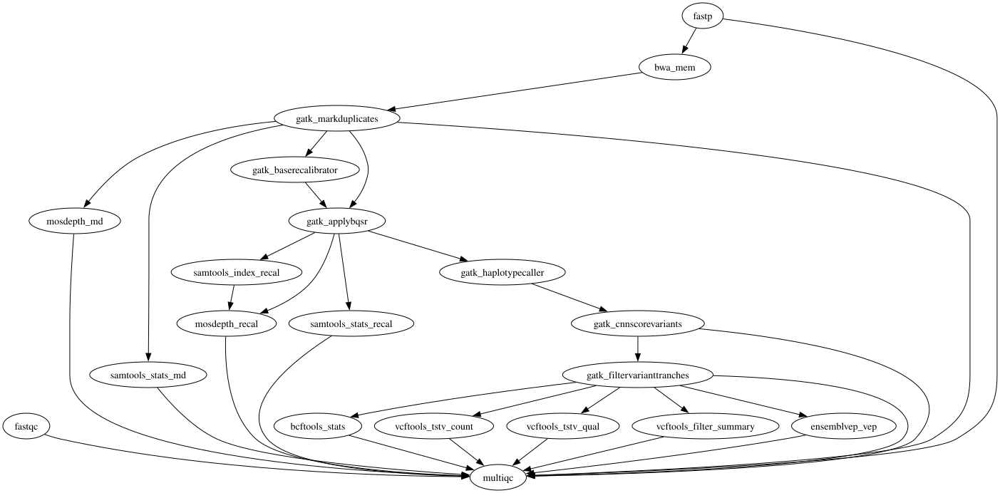

WGS/WES germline and somatic variant calling
GATK best-practice variant calling for whole-genome and whole-exome sequencing (WGS/WES), germline by default: FastQC quality control, fastp trimming and splitting, BWA-MEM (or BWA-MEM2) alignment, MarkDuplicates with CRAM or BAM output, base quality score recalibration (BQSR), single-sample HaplotypeCaller variant calling with CNN 1D scoring and tranche filtering, VEP annotation, per-sample VCF QC and a final MultiQC report. Optional ported branches (all gated off by default): reference preparation (BWA/BWAmem2 index, .dict, .fai), UMI-aware consensus calling (fgbio chain + fastp), fastp split-parts fan-out (split_parts=true: runtime-discovered per-part BWA-MEM/BWA-MEM2 alignment + BAM merge + index, no input cap), FreeBayes, Strelka2 germline, Manta germline, bcftools mpileup, TIDDIT SV, goleft indexcov, DeepVariant, NGSCheckMate sample-identity QC, and the joint-germline path (GVCF mode + GenomicsDBImport + GenotypeGVCFs + VQSR).
3.10.0$ oxo-flow run main.oxoflow
Run it
Point the [config] fasta / bwa_index / dbsnp / known_indels paths at your GRCh38 bundle and place reads as raw/<sample>_R1.fastq.gz / _R2.fastq.gz; oxo-flow dry-run main.oxoflow previews the plan.
Installation
Engine. oxo-flow >= 0.12.0
Toolchain. containers (Docker) — pinned images
Requirements. - paired-end FASTQ reads at raw/{sample}_R1.fastq.gz / raw/{sample}_R2.fastq.gz - GRCh38 genome FASTA plus .fai and .dict - GRCh38 BWA index directory (bwa_index_dir); bwa_mem2_index_dir when aligner = "bwa-mem2" - GATK bundle known-sites VCFs with .tbi: dbsnp_146.hg38.vcf.gz, Mills_and_1000G_gold_standard.indels.hg38.vcf.gz, Homo_sapiens_assembly38.known_indels.vcf.gz; known_snps + known_snps_tbi for joint VQSR - VEP cache (GRCh38, homo_sapiens, cache version 112) mounted at /.vep in the container - NGSCheckMate SNP bed (ngscheckmate_bed) when tools_ngscheckmate = true - compute: up to 24 CPUs / 36 GB per rule (BWA-MEM 24 threads/30G; VEP 6 threads/36G) - input cap: ~50M read pairs per sample when split_parts = false (fastp single-part mode); no cap with split_parts = true (runtime-discovered fan-out, requires mapped_bam = "sorted") - disk: results/ for per-sample CRAMs/VCFs/reports, plus the reference bundle and VEP cache
# 1. install oxo-flow (release binary, recommended)
curl -fL -o oxo-flow.tar.gz https://github.com/Traitome/oxo-flow/releases/latest/download/oxo-flow-latest-x86_64-unknown-linux-gnu.tar.gz
tar xzf oxo-flow.tar.gz && sudo mv oxo-flow /usr/local/bin/
# or, via conda (may lag behind releases):
# conda install -c bioconda oxo-flow-cli
# NOTE: bioconda currently ships 0.10.2, older than the >= 0.12.0
# minimum of every catalog entry — prefer the release binary.
# 2. get this workflow (clones the repo, auto-discovers the workflow,
# sanity-parses it with the engine)
oxo-flow pull gh:oxo-flow-community/oxo-flow-sarek
# (alternative: plain git clone)
# git clone https://github.com/oxo-flow-community/oxo-flow-sarek
Parameters
| Parameter | Default | Description | Used by |
|---|---|---|---|
aligner |
bwa-mem |
— | bwa_mem, bwa_mem2, bwa_mem2_split, bwa_mem_split |
alignment_ext |
cram |
Alignment-file mode: 'cram' (default) or 'bam' (when save_output_as_bam=true). recal_index_ext must match the mode ('cram.crai' vs 'bam.bai'). | bcftools_mpileup_call, bcftools_mpileup_ngscheckmate, deepvariant, freebayes, gatk_applybqsr, gatk_applybqsr_scatter, gatk_baserecalibrator, gatk_baserecalibrator_scatter, gatk_haplotypecaller, gatk_haplotypecaller_gvcf, gatk_haplotypecaller_gvcf_scatter, gatk_haplotypecaller_scatter, manta_germline, merge_index_samtools, mosdepth_md, mosdepth_recal, samtools_index_recal, samtools_reindex_bam, samtools_stats_md, samtools_stats_recal, strelka_germline, tiddit_sv |
annotate_vep |
true |
— | ensemblvep_vep, ensemblvep_vep_deepvariant, ensemblvep_vep_freebayes, ensemblvep_vep_joint, ensemblvep_vep_manta, ensemblvep_vep_mpileup, ensemblvep_vep_strelka, ensemblvep_vep_tiddit |
bwa_index_dir |
/data/references/GRCh38/Sequence/BWAIndex/ |
— | bwa_mem, bwa_mem_split, bwa_mem_umi |
bwa_mem2_index_dir |
/data/references/GRCh38/Sequence/BWAmem2Index/ |
— | bwa_mem2, bwa_mem2_split |
call_deepvariant |
false |
— | bcftools_stats_deepvariant, deepvariant, ensemblvep_vep_deepvariant, vcftools_filter_summary_deepvariant, vcftools_tstv_count_deepvariant, vcftools_tstv_qual_deepvariant |
call_freebayes |
false |
Optional callers (upstream --tools list, one boolean per tool) | bcftools_sort_freebayes, bcftools_stats_freebayes, ensemblvep_vep_freebayes, freebayes, tabix_freebayes, tabix_freebayes_filt, vcffilter_freebayes, vcftools_filter_summary_freebayes, vcftools_tstv_count_freebayes, vcftools_tstv_qual_freebayes |
call_haplotypecaller |
true |
tools / skip_tools equivalents (upstream comma-list params expressed as booleans) | bcftools_sort_joint, bcftools_stats, bcftools_stats_joint, ensemblvep_vep, ensemblvep_vep_joint, gatk_applyvqsr_indel, gatk_applyvqsr_snp, gatk_cnnscorevariants, gatk_filtervarianttranches, gatk_genomicsdbimport, gatk_genotypegvcfs, gatk_haplotypecaller, gatk_haplotypecaller_gvcf, gatk_mergevcfs_joint, gatk_variantrecalibrator_indel, gatk_variantrecalibrator_snp, vcftools_filter_summary, vcftools_filter_summary_joint, vcftools_tstv_count, vcftools_tstv_count_joint, vcftools_tstv_qual, vcftools_tstv_qual_joint |
call_indexcov |
false |
upstream runs indexcov on WGS only (germline) | goleft_indexcov, samtools_reindex_bam |
call_manta |
false |
— | bcftools_stats_manta, ensemblvep_vep_manta, manta_germline, vcftools_filter_summary_manta, vcftools_tstv_count_manta, vcftools_tstv_qual_manta |
call_mpileup |
false |
— | bcftools_mpileup_call, bcftools_stats_mpileup, ensemblvep_vep_mpileup, vcftools_filter_summary_mpileup, vcftools_tstv_count_mpileup, vcftools_tstv_qual_mpileup |
call_strelka |
false |
— | bcftools_stats_strelka, ensemblvep_vep_strelka, strelka_germline, vcftools_filter_summary_strelka, vcftools_tstv_count_strelka, vcftools_tstv_qual_strelka |
call_tiddit |
false |
— | bcftools_stats_tiddit, ensemblvep_vep_tiddit, tabix_tiddit, tiddit_sv, vcftools_filter_summary_tiddit, vcftools_tstv_count_tiddit, vcftools_tstv_qual_tiddit |
chromosomes |
'chr1', 'chr2', 'chr3', 'chr4', 'chr5', 'chr6', 'chr7', 'chr8', 'chr9', 'chr10', 'chr11', 'chr12', 'chr13', 'chr14', 'chr15', 'chr16', 'chr17', 'chr18', 'chr19', 'chr20', 'chr21', 'chr22', 'chrX', 'chrY', 'chrM' |
— | — |
dbsnp |
/data/references/GRCh38/Annotation/GATKBundle/dbsnp_146.hg38.vcf.gz |
— | gatk_baserecalibrator, gatk_baserecalibrator_scatter, gatk_filtervarianttranches, gatk_genotypegvcfs, gatk_genotypegvcfs_scatter, gatk_haplotypecaller, gatk_haplotypecaller_gvcf, gatk_haplotypecaller_gvcf_scatter, gatk_haplotypecaller_scatter, gatk_variantrecalibrator_indel, gatk_variantrecalibrator_snp |
dbsnp_tbi |
/data/references/GRCh38/Annotation/GATKBundle/dbsnp_146.hg38.vcf.gz.tbi |
— | gatk_baserecalibrator, gatk_baserecalibrator_scatter, gatk_filtervarianttranches, gatk_genotypegvcfs, gatk_genotypegvcfs_scatter, gatk_haplotypecaller, gatk_haplotypecaller_gvcf, gatk_haplotypecaller_gvcf_scatter, gatk_haplotypecaller_scatter, gatk_variantrecalibrator_indel, gatk_variantrecalibrator_snp |
dict |
/data/references/GRCh38/Sequence/WholeGenomeFasta/Homo_sapiens_assembly38.dict |
— | gatk_applybqsr, gatk_applybqsr_scatter, gatk_applyvqsr_indel, gatk_applyvqsr_snp, gatk_baserecalibrator, gatk_baserecalibrator_scatter, gatk_cnnscorevariants, gatk_filtervarianttranches, gatk_genotypegvcfs, gatk_genotypegvcfs_scatter, gatk_haplotypecaller, gatk_haplotypecaller_gvcf, gatk_haplotypecaller_gvcf_scatter, gatk_haplotypecaller_scatter, gatk_markduplicates, gatk_markduplicates_bam, gatk_variantrecalibrator_indel, gatk_variantrecalibrator_snp, manta_germline |
fasta |
/data/references/GRCh38/Sequence/WholeGenomeFasta/Homo_sapiens_assembly38.fasta |
Reference data (user-provided; GRCh38 GATK bundle layout from upstream conf/igenomes.config, substituted at port time) | bcftools_mpileup_call, bcftools_mpileup_ngscheckmate, bwa_index, bwa_mem, bwa_mem2, bwa_mem2_split, bwa_mem_split, bwa_mem_umi, bwamem2_index, deepvariant, freebayes, gatk_applybqsr, gatk_applybqsr_scatter, gatk_applyvqsr_indel, gatk_applyvqsr_snp, gatk_baserecalibrator, gatk_baserecalibrator_scatter, gatk_cnnscorevariants, gatk_createsequencedictionary, gatk_filtervarianttranches, gatk_genotypegvcfs, gatk_genotypegvcfs_scatter, gatk_haplotypecaller, gatk_haplotypecaller_gvcf, gatk_haplotypecaller_gvcf_scatter, gatk_haplotypecaller_scatter, gatk_markduplicates, gatk_markduplicates_bam, gatk_variantrecalibrator_indel, gatk_variantrecalibrator_snp, manta_germline, merge_index_samtools, mosdepth_md, mosdepth_recal, ngscheckmate_ncm, samtools_faidx, samtools_reindex_bam, samtools_stats_md, samtools_stats_recal, strelka_germline, tiddit_sv |
fasta_fai |
/data/references/GRCh38/Sequence/WholeGenomeFasta/Homo_sapiens_assembly38.fasta.fai |
— | create_intervals_bed, deepvariant, freebayes, gatk_applybqsr, gatk_applybqsr_scatter, gatk_applyvqsr_indel, gatk_applyvqsr_snp, gatk_baserecalibrator, gatk_baserecalibrator_scatter, gatk_cnnscorevariants, gatk_filtervarianttranches, gatk_genomicsdbimport, gatk_genotypegvcfs, gatk_genotypegvcfs_scatter, gatk_haplotypecaller, gatk_haplotypecaller_gvcf, gatk_haplotypecaller_gvcf_scatter, gatk_haplotypecaller_scatter, gatk_markduplicates, gatk_markduplicates_bam, gatk_variantrecalibrator_indel, gatk_variantrecalibrator_snp, goleft_indexcov, manta_germline, strelka_germline, tiddit_sv |
freebayes_filter |
30 |
upstream params.freebayes_filter | vcffilter_freebayes |
gatk_pcr_indel_model |
CONSERVATIVE |
— | gatk_haplotypecaller, gatk_haplotypecaller_gvcf, gatk_haplotypecaller_gvcf_scatter, gatk_haplotypecaller_scatter |
genome |
GRCh38 |
— | — |
group_by_umi_strategy |
Adjacency |
upstream params.group_by_umi_strategy | fgbio_groupreadsbyumi |
joint_germline |
false |
— | bcftools_sort_joint, bcftools_sort_joint_scatter, bcftools_stats, bcftools_stats_joint, ensemblvep_vep, ensemblvep_vep_joint, gatk_applyvqsr_indel, gatk_applyvqsr_snp, gatk_cnnscorevariants, gatk_filtervarianttranches, gatk_genomicsdbimport, gatk_genomicsdbimport_scatter, gatk_genotypegvcfs, gatk_genotypegvcfs_scatter, gatk_haplotypecaller, gatk_haplotypecaller_gvcf, gatk_haplotypecaller_gvcf_scatter, gatk_haplotypecaller_scatter, gatk_mergevcfs_joint, gatk_mergevcfs_joint_scatter, gatk_mergevcfs_scatter, gatk_variantrecalibrator_indel, gatk_variantrecalibrator_snp, vcftools_filter_summary, vcftools_filter_summary_joint, vcftools_tstv_count, vcftools_tstv_count_joint, vcftools_tstv_qual, vcftools_tstv_qual_joint |
joint_interval_name |
whole_genome |
Joint germline: the port runs without interval scatter; a single whole-genome interval is built from the fasta .fai (upstream: per-contig BED_PREPARE_INTERVALS) | bcftools_sort_joint, gatk_genomicsdbimport, gatk_genotypegvcfs, gatk_mergevcfs_joint |
known_indels |
'/data/references/GRCh38/Annotation/GATKBundle/Mills_and_1000G_gold_standard.indels.hg38.vcf.gz', '/data/references/GRCh38/Annotation/GATKBundle/Homo_sapiens_assembly38.known_indels.vcf.gz' |
— | gatk_baserecalibrator, gatk_baserecalibrator_scatter, gatk_filtervarianttranches, gatk_variantrecalibrator_indel |
known_indels_tbi |
'/data/references/GRCh38/Annotation/GATKBundle/Mills_and_1000G_gold_standard.indels.hg38.vcf.gz.tbi', '/data/references/GRCh38/Annotation/GATKBundle/Homo_sapiens_assembly38.known_indels.vcf.gz.tbi' |
— | gatk_baserecalibrator, gatk_baserecalibrator_scatter, gatk_filtervarianttranches, gatk_variantrecalibrator_indel |
known_snps |
/data/references/GRCh38/Annotation/GATKBundle/1000G_omni2.5.hg38.vcf.gz |
VQSR resources for joint germline (upstream conf/igenomes.config known_snps) | gatk_variantrecalibrator_snp |
known_snps_tbi |
/data/references/GRCh38/Annotation/GATKBundle/1000G_omni2.5.hg38.vcf.gz.tbi |
— | gatk_variantrecalibrator_snp |
lane |
L1 |
— | bcftools_mpileup_ngscheckmate, bwa_mem, bwa_mem2, bwa_mem2_split, bwa_mem_split, bwa_mem_umi, fastp, fastp_split, fastp_umi, fastqc, fgbio_callmolecularconsensusreads, fgbio_fastqtobam, fgbio_groupreadsbyumi, samtools_bam2fq_consensus, samtools_bam2fq_umi |
length_required |
15 |
— | fastp, fastp_split, fastp_umi |
mapped_bam |
0001 |
mapped bam stem fed to markduplicates: {sample}.{mapped_bam}.bam ("sorted" with split_parts = true) | gatk_markduplicates, gatk_markduplicates_bam |
ngscheckmate_bed |
/data/references/GRCh38/Annotation/NGSCheckMate/SNP_GRCh38_hg38_wChr.bed |
— | bcftools_mpileup_ngscheckmate, ngscheckmate_ncm |
out_dir |
results |
— | bam_merge_index_samtools, bcftools_mpileup_call, bcftools_mpileup_ngscheckmate, bcftools_sort_freebayes, bcftools_sort_joint, bcftools_sort_joint_scatter, bcftools_stats, bcftools_stats_deepvariant, bcftools_stats_freebayes, bcftools_stats_joint, bcftools_stats_manta, bcftools_stats_mpileup, bcftools_stats_strelka, bcftools_stats_tiddit, bwa_index, bwa_mem, bwa_mem2, bwa_mem2_split, bwa_mem_split, bwa_mem_umi, bwamem2_index, create_intervals_bed, deepvariant, ensemblvep_vep, ensemblvep_vep_deepvariant, ensemblvep_vep_freebayes, ensemblvep_vep_joint, ensemblvep_vep_manta, ensemblvep_vep_mpileup, ensemblvep_vep_strelka, ensemblvep_vep_tiddit, fastp, fastp_split, fastp_umi, fastqc, fgbio_callmolecularconsensusreads, fgbio_fastqtobam, fgbio_groupreadsbyumi, freebayes, gatk_applybqsr, gatk_applybqsr_scatter, gatk_applyvqsr_indel, gatk_applyvqsr_snp, gatk_baserecalibrator, gatk_baserecalibrator_scatter, gatk_cnnscorevariants, gatk_createsequencedictionary, gatk_filtervarianttranches, gatk_gatherbqsrreports, gatk_genomicsdbimport, gatk_genomicsdbimport_scatter, gatk_genotypegvcfs, gatk_genotypegvcfs_scatter, gatk_haplotypecaller, gatk_haplotypecaller_gvcf, gatk_haplotypecaller_gvcf_scatter, gatk_haplotypecaller_scatter, gatk_markduplicates, gatk_markduplicates_bam, gatk_mergevcfs_joint, gatk_mergevcfs_joint_scatter, gatk_mergevcfs_scatter, gatk_variantrecalibrator_indel, gatk_variantrecalibrator_snp, goleft_indexcov, manta_germline, merge_index_samtools, mosdepth_md, mosdepth_recal, multiqc, ngscheckmate_ncm, samtools_bam2fq_consensus, samtools_bam2fq_umi, samtools_faidx, samtools_index_recal, samtools_reindex_bam, samtools_stats_md, samtools_stats_recal, strelka_germline, tabix_freebayes, tabix_freebayes_filt, tabix_interval, tabix_tiddit, tiddit_sv, vcffilter_freebayes, vcftools_filter_summary, vcftools_filter_summary_deepvariant, vcftools_filter_summary_freebayes, vcftools_filter_summary_joint, vcftools_filter_summary_manta, vcftools_filter_summary_mpileup, vcftools_filter_summary_strelka, vcftools_filter_summary_tiddit, vcftools_tstv_count, vcftools_tstv_count_deepvariant, vcftools_tstv_count_freebayes, vcftools_tstv_count_joint, vcftools_tstv_count_manta, vcftools_tstv_count_mpileup, vcftools_tstv_count_strelka, vcftools_tstv_count_tiddit, vcftools_tstv_qual, vcftools_tstv_qual_deepvariant, vcftools_tstv_qual_freebayes, vcftools_tstv_qual_joint, vcftools_tstv_qual_manta, vcftools_tstv_qual_mpileup, vcftools_tstv_qual_strelka, vcftools_tstv_qual_tiddit |
patient |
test |
Sample metadata — mirrors tests/csv/3.0/fastq_single.csv (single-lane model: nf-core/sarek meta.id = "{sample}-{lane}", read-group ID = "{sample}.{lane}") | bwa_mem, bwa_mem2, bwa_mem2_split, bwa_mem_split, bwa_mem_umi |
prepare_reference |
false |
Optional branches (all default-off; upstream equivalents in parentheses) Reference preparation — upstream PREPARE_GENOME builds the BWA/BWAmem2 indexes + .dict + .fai when the reference lacks them; the port gates this on prepare_reference and writes into results/reference/. Point bwa_index_dir / bwa_mem2_index_dir / fasta_fai / dict at the built files to use them. | bwa_index, bwamem2_index, gatk_createsequencedictionary, samtools_faidx |
recal_index_ext |
cram.crai |
— | merge_index_samtools, mosdepth_recal, samtools_index_recal |
save_output_as_bam |
false |
CRAM output mode (upstream default) | gatk_markduplicates, gatk_markduplicates_bam |
scatter_gatk |
false |
Optional per-chromosome scatter/gather branch (default off). When scatter_gatk = true, BQSR / ApplyBQSR / HaplotypeCaller (and the joint GenotypeGVCFs) run one job per chromosome and the per-chromosome outputs are gathered (GatherBQSRReports / samtools merge+index / MergeVcfs) — results identical to the single whole-genome job (gathers are exact), with per-chromosome parallelism. Upstream scatters over dynamic duration-binned interval files; the engine's scatter takes a static value list, so the port uses one interval per chromosome. Keep chromosomes in sync with the contigs of your fasta .fai (each entry must exist in the .fai). |
bcftools_sort_joint, bcftools_sort_joint_scatter, create_intervals_bed, gatk_applybqsr, gatk_applybqsr_scatter, gatk_baserecalibrator, gatk_baserecalibrator_scatter, gatk_gatherbqsrreports, gatk_genomicsdbimport, gatk_genomicsdbimport_scatter, gatk_genotypegvcfs, gatk_genotypegvcfs_scatter, gatk_haplotypecaller, gatk_haplotypecaller_gvcf, gatk_haplotypecaller_gvcf_scatter, gatk_haplotypecaller_scatter, gatk_mergevcfs_joint, gatk_mergevcfs_joint_scatter, gatk_mergevcfs_scatter, merge_index_samtools, samtools_index_recal, tabix_interval |
seq_platform |
ILLUMINA |
— | bwa_mem, bwa_mem2, bwa_mem2_split, bwa_mem_split, bwa_mem_umi |
sex |
XX |
— | — |
skip_bcftools |
false |
— | bcftools_stats, bcftools_stats_deepvariant, bcftools_stats_freebayes, bcftools_stats_joint, bcftools_stats_manta, bcftools_stats_mpileup, bcftools_stats_strelka, bcftools_stats_tiddit |
skip_fastqc |
false |
— | fastqc |
skip_mosdepth |
false |
— | mosdepth_md, mosdepth_recal |
skip_multiqc |
false |
— | multiqc |
skip_samtools |
false |
— | samtools_stats_md, samtools_stats_recal |
skip_vcftools |
false |
— | vcftools_filter_summary, vcftools_filter_summary_deepvariant, vcftools_filter_summary_freebayes, vcftools_filter_summary_joint, vcftools_filter_summary_manta, vcftools_filter_summary_mpileup, vcftools_filter_summary_strelka, vcftools_filter_summary_tiddit, vcftools_tstv_count, vcftools_tstv_count_deepvariant, vcftools_tstv_count_freebayes, vcftools_tstv_count_joint, vcftools_tstv_count_manta, vcftools_tstv_count_mpileup, vcftools_tstv_count_strelka, vcftools_tstv_count_tiddit, vcftools_tstv_qual, vcftools_tstv_qual_deepvariant, vcftools_tstv_qual_freebayes, vcftools_tstv_qual_joint, vcftools_tstv_qual_manta, vcftools_tstv_qual_mpileup, vcftools_tstv_qual_strelka, vcftools_tstv_qual_tiddit |
split_fastq |
50000000 |
fastp --split_by_lines = split_fastq * 4 | fastp, fastp_split, fastp_umi |
split_parts |
false |
Runtime-discovered split parts: when true, fastp's --split_by_lines parts are discovered by filesystem scan (engine output_pattern primitive) and the BWA_MEM + BAM_MERGE_INDEX_SAMTOOLS stages fan out per part — no 0001-only cap. Requires mapped_bam = "sorted" (the merge output name). Not supported with umi_read_structure. Off by default (upstream single-part behavior). | bam_merge_index_samtools, bwa_mem, bwa_mem2, bwa_mem2_split, bwa_mem_split, fastp, fastp_split, fastp_umi |
status |
0 |
— | — |
tools_ngscheckmate |
false |
— | bcftools_mpileup_ngscheckmate, ngscheckmate_ncm |
trim_fastq |
false |
— | fastp, fastp_split, fastp_umi |
umi_read_structure |
`` | UMI consensus preprocessing (upstream params.umi_read_structure, e.g. '3M2S+T' or '5M2S+T'; empty string disables the whole UMI chain) | bwa_mem_umi, fastp, fastp_split, fastp_umi, fgbio_callmolecularconsensusreads, fgbio_fastqtobam, fgbio_groupreadsbyumi, samtools_bam2fq_consensus, samtools_bam2fq_umi |
vep_cache_ready |
false |
— | ensemblvep_vep, ensemblvep_vep_deepvariant, ensemblvep_vep_freebayes, ensemblvep_vep_joint, ensemblvep_vep_manta, ensemblvep_vep_mpileup, ensemblvep_vep_strelka, ensemblvep_vep_tiddit |
vep_cache_version |
112 |
The VEP cache version must match the VEP binary in envs/vep.yaml (upstream's image pins 116; this env ships ensembl-vep 112, whose cache format is version-locked — a 116 cache is unreadable). The cache itself is user data (upstream bundles it in the container at /.vep; ~30GB for whole-genome GRCh38, or a gtf2vep subset) — the VEP rule gates on vep_cache_ready. Upstream fails hard without the cache; set the flag after placing it at vep_dir_cache (see README fidelity table). | ensemblvep_vep, ensemblvep_vep_deepvariant, ensemblvep_vep_freebayes, ensemblvep_vep_joint, ensemblvep_vep_manta, ensemblvep_vep_mpileup, ensemblvep_vep_strelka, ensemblvep_vep_tiddit |
vep_dir_cache |
/.vep |
— | ensemblvep_vep, ensemblvep_vep_deepvariant, ensemblvep_vep_freebayes, ensemblvep_vep_joint, ensemblvep_vep_manta, ensemblvep_vep_mpileup, ensemblvep_vep_strelka, ensemblvep_vep_tiddit |
vep_genome |
GRCh38 |
— | ensemblvep_vep, ensemblvep_vep_deepvariant, ensemblvep_vep_freebayes, ensemblvep_vep_joint, ensemblvep_vep_manta, ensemblvep_vep_mpileup, ensemblvep_vep_strelka, ensemblvep_vep_tiddit |
vep_species |
homo_sapiens |
— | ensemblvep_vep, ensemblvep_vep_deepvariant, ensemblvep_vep_freebayes, ensemblvep_vep_joint, ensemblvep_vep_manta, ensemblvep_vep_mpileup, ensemblvep_vep_strelka, ensemblvep_vep_tiddit |
wes |
false |
— | goleft_indexcov, samtools_reindex_bam |
Descriptions are the workflow's own # comments from its [config] section, surfaced by oxo-flow info — no schema file to maintain.
Workflow graph

The graph is derived at catalog-build time from oxo-flow graph -f dot and rendered with Graphviz. It shows the workflow at rule level: wildcard {sample} instances expand at run time when sample data is discovered (the runtime view is oxo-flow graph --expanded).
Scope
The default-parameters main path of the source pipeline was ported rule-for-rule; alternate paths are documented as excluded.
In scope
- bwa_index
- bwamem2_index
- gatk_createsequencedictionary
- samtools_faidx
- fastqc
- fastp
- fastp_split
- fgbio_fastqtobam
- samtools_bam2fq_umi
- bwa_mem_umi
- fgbio_groupreadsbyumi
- fgbio_callmolecularconsensusreads
- samtools_bam2fq_consensus
- fastp_umi
- bwa_mem
- bwa_mem2
- bwa_mem_split
- bwa_mem2_split
- bam_merge_index_samtools
- gatk_markduplicates
- gatk_markduplicates_bam
- mosdepth_md
- samtools_stats_md
- gatk_baserecalibrator
- gatk_applybqsr
- samtools_index_recal
- mosdepth_recal
- samtools_stats_recal
- gatk_haplotypecaller
- gatk_cnnscorevariants
- gatk_filtervarianttranches
- freebayes
- bcftools_sort_freebayes
- tabix_freebayes
- vcffilter_freebayes
- tabix_freebayes_filt
- strelka_germline
- manta_germline
- bcftools_mpileup_call
- tiddit_sv
- tabix_tiddit
- samtools_reindex_bam
- goleft_indexcov
- deepvariant
- bcftools_mpileup_ngscheckmate
- ngscheckmate_ncm
- bcftools_stats
- vcftools_tstv_count
- vcftools_tstv_qual
- vcftools_filter_summary
- ensemblvep_vep
- gatk_haplotypecaller_gvcf
- gatk_genomicsdbimport
- gatk_genotypegvcfs
- bcftools_sort_joint
- gatk_mergevcfs_joint
- gatk_variantrecalibrator_snp
- gatk_variantrecalibrator_indel
- gatk_applyvqsr_snp
- gatk_applyvqsr_indel
- bcftools_stats_joint
- vcftools_tstv_count_joint
- vcftools_tstv_qual_joint
- vcftools_filter_summary_joint
- ensemblvep_vep_joint
- multiqc
Excluded
- Sentieon / Parabricks / DRAGMAP — commercial accelerators (licensed binaries), out of scope
- CNVkit / ASCAT / MSIsensor2 / SomaticSniper / VarDict / Control-FREEC / LoFreq / Varlociraptor — remaining somatic callers; Mutect2/Strelka2-somatic/Manta-somatic are ported (call_mutect2 / call_strelka_somatic / call_manta_somatic, pair-fanned via config/somatic_pairs.tsv); the rest need their own envs/fixtures
Fidelity
Rows cover every upstream process/rule on the default main execution path plus every ported optional branch (gated by config flags — all default-off). "not ported" rows carry a reason + evidence.
| Upstream process/rule | oxo-flow rule | Tool (version) | Notes |
|---|---|---|---|
| FASTQC | fastqc |
fastqc 0.12.1 | identical command |
| FASTP | fastp |
fastp 1.1.0 | upstream default trimming/splitting module (TrimGalore does not exist in 3.10.0 — grep -ri trimgalore over the upstream tree is empty; the --trim_fastq_trimgalore param was dropped in 3.10.0) |
| BWA_MEM | bwa_mem |
bwa 0.7.19 | upstream default aligner is bwa-mem, not bwa-mem2; read-group flags from sarek.nf; prefix {meta.id}.{reads[0] token} = test.0001 under split_fastq; the same image also carries samtools 1.22.1 (used for samtools sort) |
| BWA_MEM2 | bwa_mem2 |
bwa-mem2 2.2.1 | aligner = "bwa-mem2" (upstream params.aligner); same -K 100000000 -Y -R args as BWA_MEM; shares bwa_mem's output path — the two rules are mutually exclusive via when, all downstream rules are unchanged; index from bwa_mem2_index_dir |
| GATK4_MARKDUPLICATES | gatk_markduplicates |
gatk4 4.5.0.0 | default CRAM branch (save_output_as_bam=false) |
| GATK4_MARKDUPLICATES (BAM branch) | gatk_markduplicates_bam |
gatk4 4.5.0.0 | save_output_as_bam = true; --CREATE_INDEX true, no CRAM conversion; .md.bai renamed to .md.bam.bai (upstream BAM_MERGE_INDEX_SAMTOOLS); downstream rules read {config.alignment_ext} / {config.recal_index_ext} (set "bam" / "bam.bai" together) |
| MOSDEPTH (post-MD) | mosdepth_md |
mosdepth 0.3.14 | ext.prefix {meta.id}.md; WGS --by 500 mode |
| SAMTOOLS_STATS (post-MD) | samtools_stats_md |
samtools 1.24 | ext.prefix {meta.id}.md.{alignment_ext}; 1.24 is the version in the htslib_samtools stats/index images (the BWA image carries 1.22.1) |
| GATK4_BASERECALIBRATOR | gatk_baserecalibrator |
gatk4 4.5.0.0 | known-sites = dbsnp + Mills gold standard + known indels (GRCh38); single whole-genome job by default; per-chromosome jobs under scatter_gatk = true (see the scatter/gather row) |
| GATK4_APPLYBQSR | gatk_applybqsr |
gatk4 4.5.0.0 | output CRAM per default (BAM in the save_output_as_bam branch); single whole-genome job by default; per-chromosome jobs under scatter_gatk = true (see the scatter/gather row) |
| SAMTOOLS_INDEX (recal) | samtools_index_recal |
samtools 1.24 | indexes the recalibrated alignment (.crai or .bam.bai) |
| MOSDEPTH (recal) | mosdepth_recal |
mosdepth 0.3.14 | ext.prefix {meta.id}.recal |
| SAMTOOLS_STATS (recal) | samtools_stats_recal |
samtools 1.24 | ext.prefix {meta.id}.recal.{alignment_ext} |
| GATK4_HAPLOTYPECALLER | gatk_haplotypecaller |
gatk4 4.5.0.0 | default tools=haplotypecaller,vep → call_haplotypecaller=true; single-sample mode (no -ERC GVCF), --pcr-indel-model CONSERVATIVE; gated off when joint_germline = true (upstream picks the GVCF branch); single whole-genome job by default; per-chromosome jobs under scatter_gatk = true (see the scatter/gather row) |
| GATK4_CNNSCOREVARIANTS | gatk_cnnscorevariants |
gatk4 4.5.0.0 | VCF_VARIANT_FILTERING_GATK part 1; CNN 1D scoring (module default --tensor-type 1D); upstream keeps the {sample}.cnn.vcf.gz intermediate unpublished — the port stores it under results/variant_calling/cnnscorevariants/ for DAG handoff; skipped in joint mode (upstream: no filtering of the joint VCF) |
| GATK4_FILTERVARIANTTRANCHES | gatk_filtervarianttranches |
gatk4 4.5.0.0 | VCF_VARIANT_FILTERING_GATK part 2; ext.args --info-key CNN_1D, ext.prefix {meta.id}.haplotypecaller, known sites (dbsnp + 2 GRCh38 indel sets) passed as --resource; produces {sample}.haplotypecaller.filtered.vcf.gz |
| BCFTOOLS_STATS | bcftools_stats |
bcftools 1.23.1 | VCF_QC_BCFTOOLS_VCFTOOLS part 1; runs on the filtered VCF (prefix {meta.id}.haplotypecaller.filtered) |
| VCFTOOLS_TSTV_COUNT | vcftools_tstv_count |
vcftools 0.1.17 | VCF_QC_BCFTOOLS_VCFTOOLS part 2; runs on the filtered VCF |
| VCFTOOLS_TSTV_QUAL | vcftools_tstv_qual |
vcftools 0.1.17 | VCF_QC_BCFTOOLS_VCFTOOLS part 3; runs on the filtered VCF |
| VCFTOOLS_SUMMARY | vcftools_filter_summary |
vcftools 0.1.17 | VCF_QC_BCFTOOLS_VCFTOOLS part 4; runs on the filtered VCF |
| ENSEMBLVEP_VEP | ensemblvep_vep |
ensembl-vep 112.0 | annotates the filtered VCF ({sample}.haplotypecaller.filtered_VEP.ann.vcf.gz); gated on vep_cache_ready — upstream fails hard without the cache (bundled at /.vep via --vep_cache); set the flag after placing a cache at vep_dir_cache; --cache_version 112 (matches the env binary — VEP caches are version-locked), GRCh38 |
| PREPARE_GENOME (BWA_INDEX) | bwa_index |
bwa 0.7.19 | prepare_reference = true; builds results/reference/bwa/index.{amb,ann,bwt,pac,sa} — fixed index prefix (upstream: fasta basename; irrelevant downstream, the BWA rules find the index by extension). Deviation: upstream does not publish the index unless save_reference; the port publishes it because oxo-flow outputs must be tracked |
| PREPARE_GENOME (BWAMEM2_INDEX) | bwamem2_index |
bwa-mem2 2.2.1 | same gating/prefix note; results/reference/bwamem2/index.{0123,amb,ann,bwt.2bit.64,pac} |
| PREPARE_GENOME (GATK4_CREATESEQUENCEDICTIONARY) | gatk_createsequencedictionary |
gatk4 4.5.0.0 | --URI is the fasta basename as upstream; GATK writes <fasta-basename>.dict, the port renames it to reference.dict for a fixed output path |
| PREPARE_GENOME (SAMTOOLS_FAIDX) | samtools_faidx |
samtools 1.24 | indexes a workdir copy of the fasta (the {config.fasta} path is treated as read-only); output results/reference/fai/reference.fasta.fai |
| SAREK_UMI (FGBIO_FASTQTOBAM → SAMTOOLS_BAM2FQ → BWA_MEM → FGBIO_GROUPREADSBYUMI → FGBIO_CALLMOLECULARCONSENSUSREADS → BAM_CONVERT_SAMTOOLS → FASTP) | fgbio_fastqtobam, samtools_bam2fq_umi, bwa_mem_umi, fgbio_groupreadsbyumi, fgbio_callmolecularconsensusreads, samtools_bam2fq_consensus, fastp_umi |
fgbio 3.1.2, bwa 0.7.19, samtools 1.24, fastp 1.1.0 | umi_read_structure set (e.g. "3M2S+T"); fastp_umi shares the fastp output paths so BWA-MEM downstream is untouched; GroupReadsByUmi histogram/metrics go to reports/umi/; see deviations for the BAM_CONVERT_SAMTOOLS collapse |
| BAM_VARIANT_CALLING_FREEBAYES (FREEBAYES_GERMLINE, BCFTOOLS_SORT, TABIX_VC, VCFLIB_VCF_FILTER, TABIX_FILT) | freebayes, bcftools_sort_freebayes, tabix_freebayes, vcffilter_freebayes, tabix_freebayes_filt |
freebayes 1.3.10, bcftools 1.23.1, vcflib 1.0.14 | call_freebayes = true; --min-alternate-fraction 0.1 --min-mapping-quality 1; QUAL filter threshold from freebayes_filter (30, upstream params.freebayes_filter); all four VCFs/TBI published to variant_calling/freebayes/{sample}/ as upstream |
| STRELKA_GERMLINE | strelka_germline |
strelka 2.9.10 | call_strelka = true; ext.prefix {meta.id}.strelka; email-check disabled via the upstream sed; all six outputs (SNP/INDEL/variants × vcf+tbi) published as upstream |
| MANTA_GERMLINE | manta_germline |
manta 1.6.0 | call_manta = true; ext.prefix {meta.id}.manta; only the diploid_sv pair is published — candidateSmallIndels/candidateSV stay in the workdir exactly as upstream |
| BCFTOOLS_MPILEUP (germline) | bcftools_mpileup_call |
bcftools 1.23.1 | call_mpileup = true; args --output-type v --multiallelic-caller, filter count(GT=="RR")==0; the module's own bcftools_stats file stays unpublished (as upstream) |
| TIDDIT_SV + TABIX_BGZIP_TIDDIT_SV | tiddit_sv, tabix_tiddit |
tiddit 3.9.5 | call_tiddit = true; --skip_assembly (upstream passes an empty bwa index channel for germline); .ploidies.tab published as upstream |
| BAM_VARIANT_CALLING_INDEXCOV (SAMTOOLS_REINDEX_BAM + GOLEFT_INDEXCOV) | samtools_reindex_bam, goleft_indexcov |
samtools 1.24, goleft 0.2.4 | WGS only (!wes && call_indexcov); per-sample header-only reindex with -F 3844 -q 30 + --write-index over /dev/null##idx##; cohort run --fai --directory indexcov (no --extranormalize — inputs are BAMs, matching upstream's reindex path); bed.gz+tbi published to variant_calling/indexcov/ |
| RUNDEEPVARIANT | deepvariant |
deepvariant 1.10.0 | call_deepvariant = true; --model_type=WGS --sample_name {sample}; vcf + g.vcf pairs published to variant_calling/deepvariant/{sample}/ |
| BAM_NGSCHECKMATE (BCFTOOLS_MPILEUP + NGSCHECKMATE_NCM) | bcftools_mpileup_ngscheckmate, ngscheckmate_ncm |
bcftools 1.23.1, ngscheckmate 1.0.1 | tools_ngscheckmate = true; per-sample mpileup --no-version --ploidy 1 -c with -T SNP bed, reheader to {sample}-{lane}; cohort NCM_REF=./reference.fasta ncm.py -d . -bed <bed> -O . -N ngscheckmate -V; outputs published to reports/ngscheckmate/ (live-verify: ncm.py's exact output filenames, see Test) |
| Joint germline (GATK4_HAPLOTYPECALLER GVCF, GATK4_GENOMICSDBIMPORT, GATK4_GENOTYPEGVCFS, BCFTOOLS_SORT, GATK4_MERGEVCFS, GATK4_VARIANTRECALIBRATOR SNP+INDEL, GATK4_APPLYVQSR SNP+INDEL) | gatk_haplotypecaller_gvcf, gatk_genomicsdbimport, gatk_genotypegvcfs, bcftools_sort_joint, gatk_mergevcfs_joint, gatk_variantrecalibrator_snp, gatk_variantrecalibrator_indel, gatk_applyvqsr_snp, gatk_applyvqsr_indel |
gatk4 4.5.0.0, bcftools 1.23.1 | joint_germline = true; VQSR resource labels from conf/igenomes.config GRCh38 (1000G omni2.5 SNP → known_snps, dbsnp; gatk+mills indels); upstream prefixes joint_variant_calling_SNP/INDEL (VQSR intermediates unpublished upstream — the port keeps them under results/ for DAG handoff); final joint_germline_recalibrated.vcf.gz; one whole-genome interval from the fasta .fai by default, per-chromosome under scatter_gatk = true (see the scatter/gather row) |
| Joint VCF QC + VEP | bcftools_stats_joint, vcftools_tstv_count_joint, vcftools_tstv_qual_joint, vcftools_filter_summary_joint, ensemblvep_vep_joint |
bcftools 1.23.1, vcftools 0.1.17, ensembl-vep 112.0 | upstream runs VCF_QC + VEP on the joint VCF (vcf_all); the per-sample QC/VEP rules are gated off in joint mode and these cohort rules take over (prefix joint_germline_recalibrated) |
| MULTIQC | multiqc |
multiqc 1.35 | fan-in over all report producers (depends_on covers the gated branches — skipped rules auto-satisfy); scans the results dir with the upstream assets/multiqc_config.yml |
| PREPARE_INTERVALS (BUILD_INTERVALS, CREATE_INTERVALS_BED, TABIX_BGZIPTABIX) + per-interval scatter/gather of BQSR / ApplyBQSR / HaplotypeCaller / joint GenotypeGVCFs (GATK4_GATHERBQSRREPORTS, CRAM/BAM_MERGE_INDEX_SAMTOOLS, GATK4_MERGEVCFS) | create_intervals_bed, tabix_interval, gatk_baserecalibrator_scatter, gatk_gatherbqsrreports, gatk_applybqsr_scatter, merge_index_samtools, gatk_haplotypecaller_scatter, gatk_mergevcfs_scatter, gatk_haplotypecaller_gvcf_scatter, gatk_genomicsdbimport_scatter, gatk_genotypegvcfs_scatter, bcftools_sort_joint_scatter, gatk_mergevcfs_joint_scatter |
gawk 5.3.0, samtools 1.24, gatk4 4.5.0.0 | scatter_gatk = true (default off). Deviation: the engine's scatter fan-out takes a static value list, so intervals are one per chromosome (config.chromosomes — keep it in sync with the fasta .fai) instead of upstream's duration-binned windows (nucleotides_per_second); every downstream gather is exact and writes the same paths as the single-job branch, so results are identical — the branch adds per-contig parallelism, it does not change outputs. Needs live verification (see Test) |
| fastp split parts (multi-part BWA_MEM + BAM_MERGE_INDEX_SAMTOOLS) | fastp_split, bwa_mem_split, bwa_mem2_split, bam_merge_index_samtools |
fastp 1.1.0, bwa 0.7.19 / bwa-mem2, samtools 1.24 | split_parts = true (default off) — fastp's --split_by_lines parts are enumerated at runtime via the engine's output_pattern primitive (data-dependent part count, exactly like upstream's channel scan) and the per-part BWA_MEM/BWA_MEM2 + BAM_MERGE_INDEX_SAMTOOLS fan-out is reproduced: every part is aligned ({sample}.NNNN.bam, upstream prefix {meta.id}.{token}) and merged + indexed into {sample}.sorted.bam (upstream MERGE_BAM prefix {meta.id}.sorted) before MarkDuplicates — no input cap. Requires mapped_bam = "sorted"; not supported with umi_read_structure. See the deviation note below for the merge gating design. Requires the engine's output_pattern primitive (Traitome/oxo-flow#235) — unreleased as of v0.16.0, ships in the next engine release |
| Somatic callers (Mutect2, somatic Strelka2/Manta, CNVkit, ASCAT, MSIsensor2/pro, SomaticSniper, VarDict, Control-FREEC, LoFreq, Varlociraptor) | — not ported | — | tumor/normal pairs required; the port's samplesheet is single-sample germline ([[sample_groups]]; the engine's [[pairs]] mechanism is a possible follow-up) |
| Sentieon / Parabricks / DRAGMAP | — not ported | — | commercial accelerators (licensed binaries); out of scope |
| VCF_QC + ENSEMBLVEP_VEP fan-out over the optional callers | bcftools_stats_{freebayes,strelka,mpileup,deepvariant,manta,tiddit}, vcftools_tstv_count_{...}, vcftools_tstv_qual_{...}, vcftools_filter_summary_{...}, ensemblvep_vep_{...} |
bcftools 1.23.1, vcftools 0.1.17, ensembl-vep 112.0 | upstream runs VCF_QC + VEP on every caller VCF (vcf_all); the port now mirrors that: when call_freebayes/call_strelka/call_mpileup/call_deepvariant/call_manta/call_tiddit enables a caller, its VCF is QC'd (reports/bcftools/<caller>/, reports/vcftools/<caller>/) and annotated (annotation/<caller>/) with the same prefix conventions as the haplotypecaller rules; tiddit's uncompressed .vcf uses --vcf instead of --gzvcf (as upstream). All 30 rules are gated on their caller's flag (+ skip_bcftools/skip_vcftools/annotate_vep/vep_cache_ready) and feed the multiqc depends_on. Needs live verification (see Test) |
Deviations (all documented, nothing silently dropped):
- fastp split parts — runtime-discovered fan-out (
split_parts = true): the engine has no fan-in/collection over runtime-discovered values (output_pattern v1), so the per-sample merge is a plan-time rule whose shell waits for the deterministic part count — fastp's parts are 1:1 with the part BAMs andfastp_split's finalmvlands all parts at once — then runs BAM_MERGE_INDEX_SAMTOOLS exactly once. A failed per-part alignment fails the run (fail-fast cancels the waiting merge), so the wait cannot hang on a healthy pipeline.split_partsis off by default and the default path is unchanged: single part0001.->{sample}.0001.bam(the upstreamtokenize('.')[0]behavior), so small/medium inputs never see the new machinery. UMI consensus mode (umi_read_structure) is not supported withsplit_parts— the two gates are mutually exclusive. - scatter/gather is opt-in and uses per-chromosome intervals: the
upstream per-interval fan-out (duration-binned windows) becomes
scatter_gatk = truein the port — one interval per chromosome (the engine's scatter needs a static value list, soconfig.chromosomesreplaces upstream'snucleotides_per_secondbinning; both split a whole-genome interval set, but per-chromosome granularity is coarser). Off by default: BQSR, ApplyBQSR, HaplotypeCaller (and joint GenotypeGVCFs) run as single whole-genome jobs (one interval from the fasta.faifor the joint path). Every gather (GatherBQSRReports, samtools merge+index, MergeVcfs) writes the same output paths in both branches, so the branches are exchangeable without touching downstream rules. - BAM_CONVERT_SAMTOOLS collapse (UMI path): at this upstream commit the
four
samtools viewcalls inbam_convert_samtoolshave no distinguishing-f/-Fflags anywhere inconf/(grep-verified), so the view → merge → collate → cat machinery emits four identical BAMs and doubles the reads in the merged output. The port reproduces the functional intent with a singlesamtools collate -O | samtools fastqinstead. - CNN-scored intermediate location: upstream disables the
CNNSCOREVARIANTS publishDir (the
{sample}.cnn.vcf.gzstays in the task workdir); oxo-flow hands files between rules throughresults/, so the port keeps it underresults/variant_calling/cnnscorevariants/(same for the joint VQSR intermediates, unpublished upstream). - reference-prep outputs are published: upstream leaves built
BWA/BWAmem2 indexes,
.dictand.faiin the task workdir unlesssave_reference; oxo-flow requires tracked outputs, so the port publishes them underresults/reference/— pointbwa_index_dir/bwa_mem2_index_dir/fasta_fai/dictat those paths to use them. - single-lane model:
meta.id={sample}from BWA-MEM onward (upstream:{sample}-{lane}); preprocessing stage files keep the upstream{sample}-{lane}prefix. Read-group IDs are{sample}.{lane}as upstream. - Docker staging: only the rule workdir is mounted, so reference files are
copied into the workdir under fixed local names (
reference.fasta,reference.fasta.fai,reference.dict) — same effect as Nextflow's staging of the reference into the task directory. known_indelsis a TOML array (2 GRCh38 files); both it andknown_indels_tbimust be updated together when changing references.
Links
- Repository: oxo-flow-sarek
- Upstream: nf-core/sarek @
3.10.0 - License: Apache-2.0 (this workflow) · MIT (upstream)
Created on 2026-08-15 — this port may lag behind upstream releases. See the repository's NOTICE for full attribution.